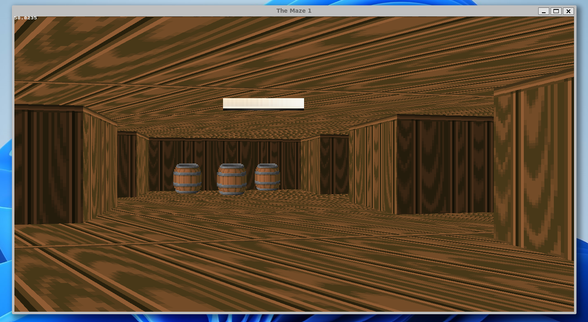
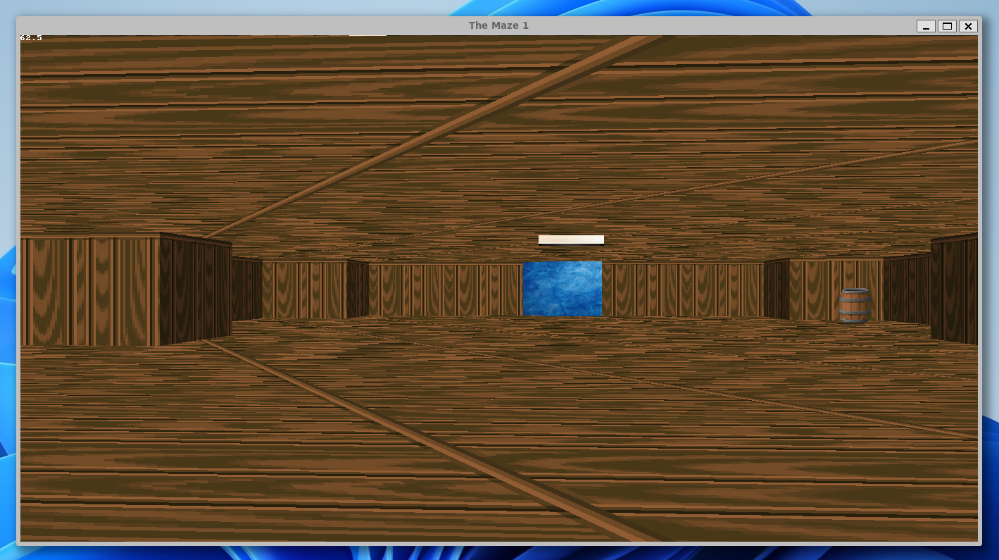
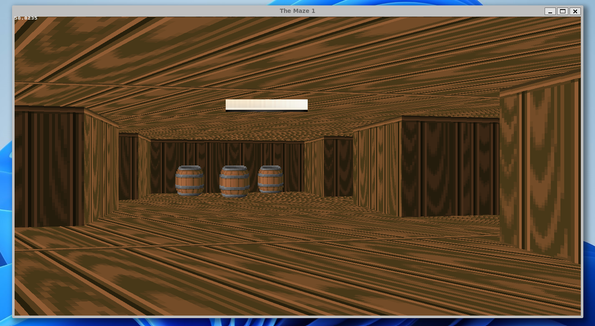
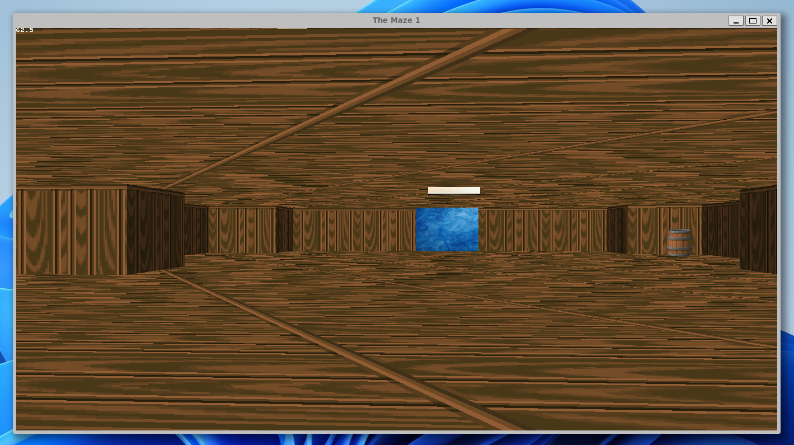
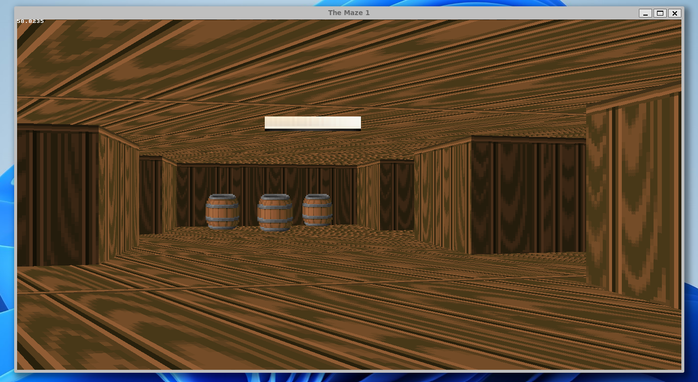
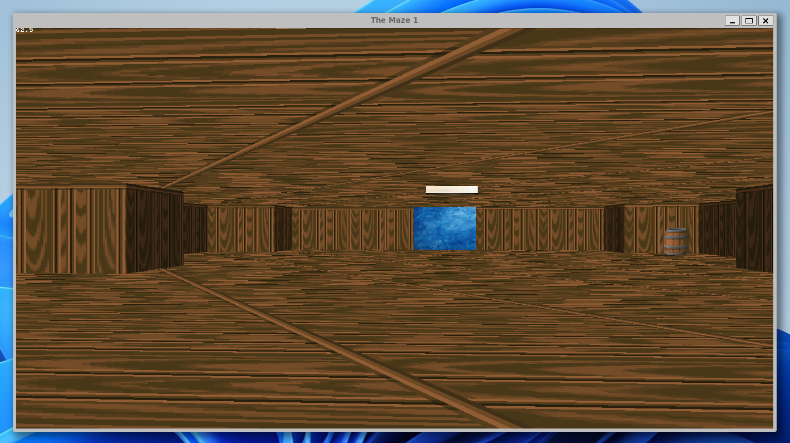

Welcome to "The Maze" - The maze is a simple project where you try to find your way around a room where everything looks alike and you have to find your way out.
Are you ready to embark on an exciting journey through an intricate maze that is full of twists and turns? Do you have what it takes to reach the end of the maze and emerge victorious?
In "The Maze," you will navigate through a complex labyrinth that is filled with obstacles and challenges. You'll need to use your intuition, logic, and problem-solving abilities to find the exit and win the game. With each level, the maze becomes more complex and challenging, and you'll need to stay focused and sharp to make it to the end.

